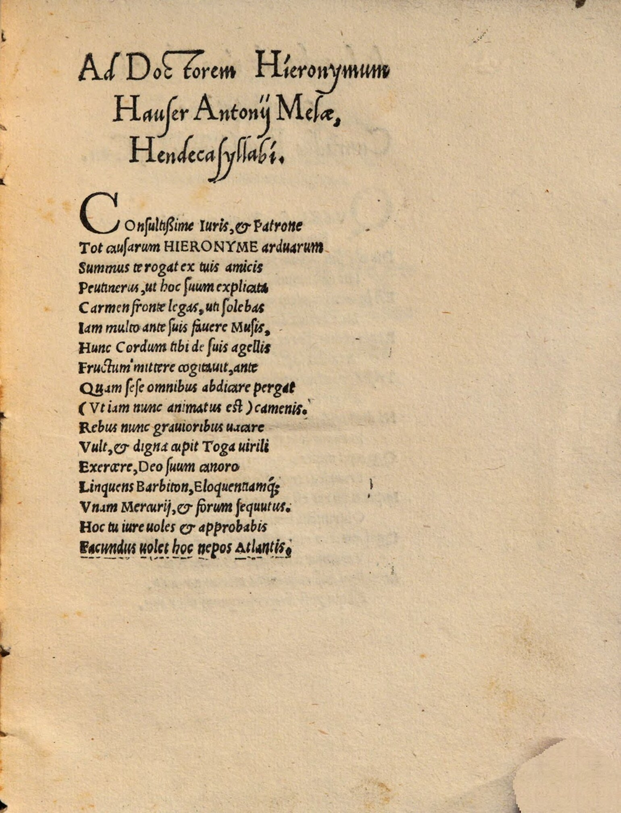

Peutinger 18 (Anton Niger)
Faksimile

Transkription
Ad Doctorem Hieronymum Hauser Antonii Melae, Hendecasyllabi.
Consultissime Iuris, et Patrone
Tot causarum Hieronyme arduarum
Summus te rogat ex tuis amicis
Peutinerus, ut hoc suum explicata
Carmen fronte legas, ut solebas
Iam multo ante suis favere Musis,
Hunc Cordum tibi de suis agellis
Fructum mittere cogitavit, ante
Quam sese omnibus abdicare pergat
(Ut iam nunc animatus est) camenis.
Rebus nunc gravioribus vacare
Vult, et digna cupit Toga virili
Exercere, Deo suum canoro
Linquens Barbiton, Eloquentiamque
Unam Mercurii, et forum secutus.
Hoc tu iure voles et approbabis
Facundus volet hoc nepos Atlantis.
Übersetzung
Elfsilbler des Anton Niger an Doktor Hieronymus Hauser.
Hieronymus, du aller Rechtskundigster und Anwalt so vieler schwieriger Fälle, von deinen Freunden bittet dich der oberste, Peutinger, dass du dieses sein Gedicht mit nicht gerunzelter Stirn liest, wie du schon lange vorher seinen Musen wie gewohnt geneigt warst. Diese späte Frucht gedachte er dir von seinen Äckerlein zu schicken, bevor er sich aufmacht, sich von allen Musen loszusagen (wie er nunmehr eingestellt ist). Nun will er Platz machen für bedeutendere Dinge und begehrt, Angemessenes in der Toga virilis auszuführen. Seine Lyra hinterließ er dem wohlklingenden Gott und strebte nach der einzigartigen Redegewandtheit des Merkur und dem Forum. Dies wirst du zu Recht wollen und gutheißen, dies wird der beredte Enkel des Atlas wollen.
Metadaten
| Titel des Gedichts: | Ad Doctorem Hieronymum Hauser Antonii Melae, Hendecasyllabi. |
| Autor der Gedichts: | Anton Niger (Antonius Niger Mela) |
| Containerwerk: | Quorundam iuris scientia illustratorum iudicium ex praeceptoribus meis collectum, Wien 1529 |
| Autor des Containerwerks: | Konrad Peutinger (Conradus Peutinger) |
| Gattung des Containerwerks: | Fachschriftstellerei, Rechtsgeschichte |
| Erscheinungsjahr: | 1529 |
| Verschlagwortung: | Hendekasyllabi, Elfsilbler, Recht, Bitte um Wohlwollen, Musen, Frucht, Acker, Poetologie, Lyra, Apoll, Merkur, Forum, Rhetorik, Atlas, Hieronymus Hauser |